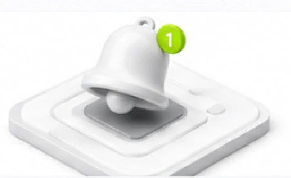

Bildirishnomalar
Barcha bildirishnomalar va yangiliklar markazi
Bildirishnomalar
Jami: –
Muhim eslatma
Muhim bildirishnomalarni o'tkazib yubormaslik uchun, kanal va tur sozlamalaringizni tekshirib boring.
